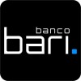

Leonardo Pianowski
Olá, sou Leo
Customer Success Analyst Estudante de desenvolvimento web, semi graduado em engenharia de produção e com 3 anos de experência em customer success!Experiências
Customer Success Analyst
Comunica.in | fev/2022 - Atual
- Responsável pelo suporte via chat (Zendesk), responder dúvidas sobre o produto, passar demandas para o time de tecnologia como bugs e tasks.
- Definição e melhoria de processos de suporte.
- Auxilio na criação de materiais internos e FAQ.
- Reuniões com os clientes para alinhamentos de usabilidade da plataforma.
Customer Experience Analyst
BEES Bank Brasil | out/2021 - fev/2022
- Atuando no suporte de Nível 2 (N2).
- Respondendo dúvidas e resolvendo problemas através de tickets via Zendesk.
- Responsável por demandas da área de banking (TED, PIX, Boletos).
- Utilizando grafana e DataBricks (SQL) para fazer a análise dos casos.
Implementation Success Manager
Olist | jun/2021 - out/2022
- Realização de contato com a base de lojistas após o ganho, por meio de chat, telefone e e-mail, dando o suporte necessário.
- Objetivo de alavancar as primeiras vendas dos nossos lojistas realizando o onboarding e primeiros passos.
- Analisar informações e dados elaborando estratégias, identificando e corrigindo possíveis problemas.
- Acompanhar os primeiros passos do lojista e atuar de forma consultiva, identificando oportunidades de negócio e de melhoria, além de atuar em reversão ao churn.

Analista de Relacionamento
Banco Bari | mar/2021 - jun/2022
- Responsável por atender dúvidas, problemas e sugestões referentes ao banco digital.
- Atendimento de até 4 chats simultâneos.
- Auxilio na criação dos materiais de apoio aos colaboradores, construção de fluxogramas dos processos da área.
Customer Success Analyst
EngagED S/A | out/2020 - mar/2021
- Responsável pelo suporte via chat (Intercom), responder dúvidas sobre o produto, passar demandas para o time de tecnologia como bugs e tasks.
- Definição e melhoria de processos de suporte.
- Extração de dados e relatórios do banco de dados (MongoDB).
- Demandas de tecnologias, tais como alteração, sincronização e criação de dados via endpoint (Postman).
Customer Support Analyst
aftersale | set/2019 - out/2020
- Garantir que todos os cliente da base tenham um atendimento de alta qualidade.
- Auxílio ao Head da área com os dados da usabilidade dos clientes;
- Auxílio na implementação da ferramenta de suporte Movidesk.
- Coletar feedbacks dos cliente afim de propor possíveis melhorias na plataforma para o time de produto;
Tecnologias
HTML
CSS
Excel
SQL
Pipefy
Pipedrive
Zendesk
Movidesk
Intercom
Postman
Sentry
DBeaver